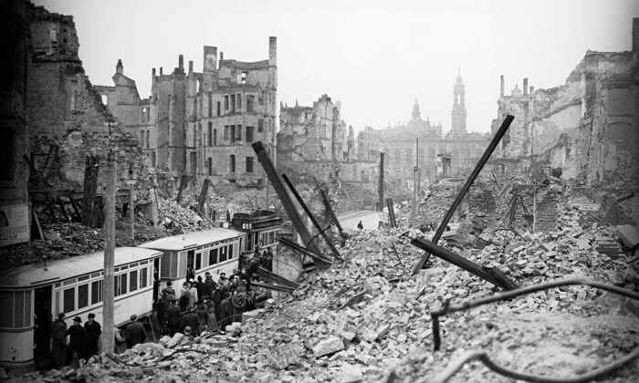
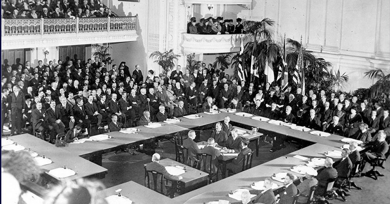
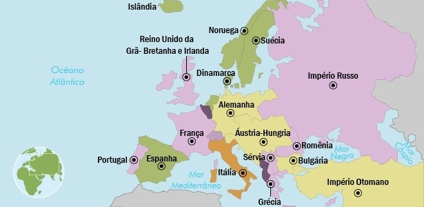

Consequências



Ruínas após a guerra
🔹 Perdas humanas
- Aproximadamente 10 milhões de mortos e mais de 20 milhões de feridos.
- Uma geração inteira traumatizada pelos horrores da guerra.
- Invalidez, fome, doenças e impactos psicológicos marcaram sobreviventes.
🔹 Tratado de Versalhes (1919)
- Alemanha responsabilizada pela guerra.
- Condições impostas:
- Pagamento de pesadas indenizações.
- Redução do exército para 100 mil soldados.
- Devolução da Alsácia-Lorena à França.
- Perda de todas as colônias.
- Foi considerada uma “paz punitiva”, que gerou ressentimento e abriu espaço para o nazismo.
🔹 Transformações políticas e territoriais
- Queda de grandes impérios: Alemão, Austro-Húngaro, Otomano e Russo.
- Surgimento de novos países: Polônia, Finlândia, Iugoslávia, Tchecoslováquia, entre outros.
- A Rússia tornou-se socialista após a Revolução de 1917.
- Os Estados Unidos emergiram como potência mundial.
🔹 Impacto econômico e social
- Europa devastada economicamente e fisicamente.
- Infraestruturas destruídas, inflação, desemprego e miséria.
- Crescimento do papel das mulheres na sociedade, pois muitas ocuparam funções de trabalho antes exclusivas dos homens.
🔹 Caminho para a Segunda Guerra Mundial
- O ressentimento alemão pelo Tratado de Versalhes e a crise econômica dos anos 1920–30 favoreceram o crescimento do nazismo.
- Apenas 21 anos após o fim da Primeira Guerra, a Europa mergulhou em novo conflito global: a Segunda Guerra Mundial (1939–1945).